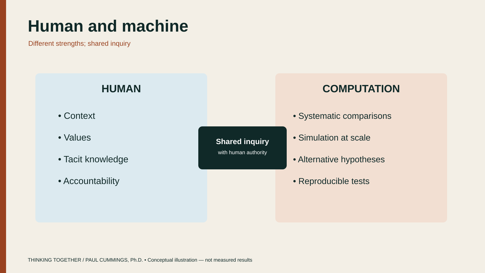
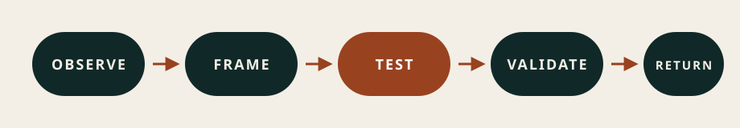
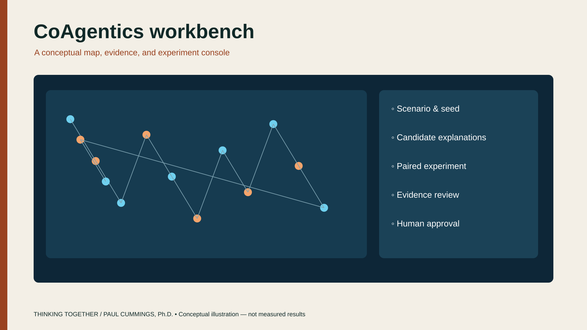
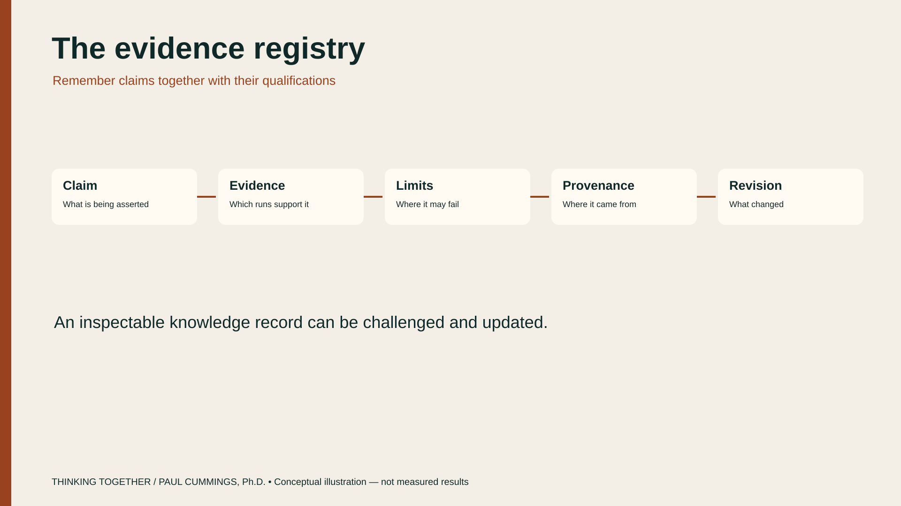
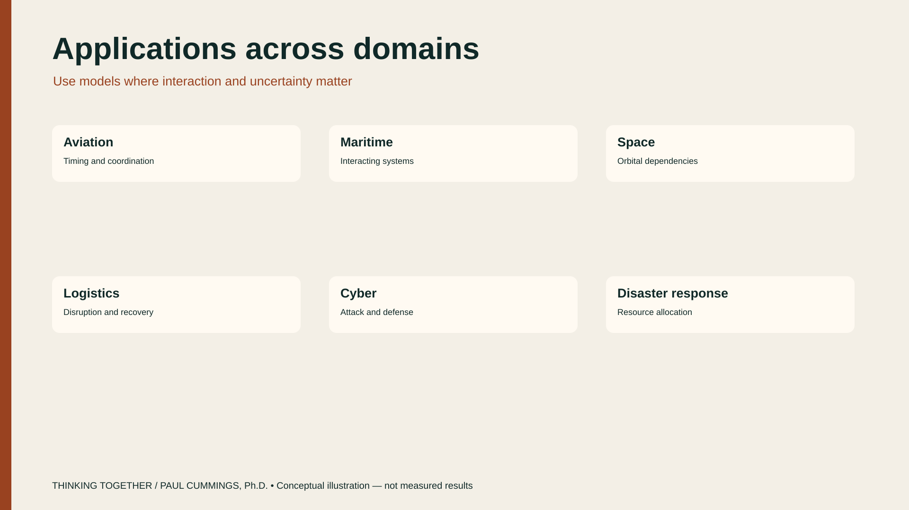

The book
Thinking Together
Opening the AI black box through observation, experimentation, and discovery. A 2026 manuscript by Paul Cummings, Ph.D.

Large language models can produce convincing answers, but their fluency tells us little about how they arrive at them.
Thinking Together explores how people can use computational models, controlled experiments, and competing explanations to investigate AI behavior. By observing what models do, changing the conditions under which they operate, and testing the results, we can uncover patterns, identify limitations, and discover strategies that improve human reasoning.

The goal is not simply to understand AI. It is to learn from experimentation with AI—and use what we discover to ask better questions, build better models, and exercise better judgment.

CoAgentics
CoAgentics is a research and decision-support workbench built to make those ideas concrete: a place to put the black box under inquiry. It keeps observations, competing explanations, counterfactual experiments, uncertainty, evidence, and human decisions connected in one inspectable workflow. Language models may interpret a question or explain a result drawn from authoritative records. They do not own the represented world, promote their own claims, or hold decision authority.

The book is not a product manual for CoAgentics. CoAgentics is one instrument for practicing shared inquiry — the same loop the chapters teach. A working implementation is not proof that the cognitive claims are true. Questions about calibration, transfer, learning, appropriate reliance, and later human judgment stay empirical: they require studies with people.



Two cases put the inquiry loop in a concrete setting:


Diagrams are conceptual illustrations, not measured experimental results.
Where it starts
The manuscript opens with a conversation on a porch above a lake in New York. A middle-school educator, a mathematician working on national-security problems, and college students were each asking a different version of the same question: what should happen to human thinking when machines begin to participate in it?
The book does not answer that by dividing tasks between person and machine. It asks what kind of human thinking the relationship should produce. A person often begins with something small: a remembered pattern, a doubt, an unexpected connection. The next move is to open that recognition and ask what would support it, what would challenge it, and which alternatives deserve a test.
What the chapters do
-
1
From Human Cognition to Shared Inquiry
Human reasoning is selective. Experience changes what catches the eye, and fast recognition can compress years of practice or carry a systematic error. AI can keep alternatives available after working memory would have collapsed them. An intuition starts the inquiry. It is not the verdict.
-
2
A Mission Investigation
Communications weaken, partner aircraft report different things, and the mission window closes. The hard part is the gap between what happened, what the team saw, and what the team believed.
-
3
Inside the Loop: From Question to Evidence
A short question becomes explicit working state: mission context, focus, live hypotheses, current evidence, and a next test. Conversation can interpret the question. It does not hold analytical or decision authority.
-
4
Domain: Representing the Decision World
Before two parties can reason about the same situation, they need common referents: what happened, when it was observed, when it became available, where it came from, and how much confidence it deserves.
-
5
Strategy: Representing What Could Be True or Done
The first plausible story can take over too quickly. Strategy keeps several explanations explicit and ties each one to evidence that could strengthen, weaken, or distinguish it.
-
6
Experiment: Learning by Controlled Comparison
Explanations become useful once the inquiry finds where they differ. The result stays conditional on the scenario, the intervention, and the model.
-
7
Validation: What Are We Entitled to Believe?
A result can be precise and still be wrong, brittle, or irrelevant outside the conditions that produced it.
-
8
Knowledge: What Should the System Remember?
Knowledge is an inspectable record outside the conversational model: claims, evidence, experiments, contradictions, provenance, and history.
-
9
The Human Workbench: A Place to Think
The workbench is where someone can see what the system is attending to, redirect the inquiry, and carry evidence back into judgment.
-
10
When Human and Machine Disagree
Neither side gets automatic priority. Disagreement can reveal what the relationship has not yet reconciled.
-
11
Learning to Think Together
Across cases, a useful pattern of checks can become a candidate human heuristic.
-
12
What We Carry Forward
Computational behavior becomes a human strategy only after it is identified, formalized, bounded, and taught.
-
13
The Strategy Knowledge Base
A growing library of methods must keep evidence visible and avoid turning retrieval into authority.
-
14
Authority, Responsibility, and the Right to Disagree
Once analysis can influence action, authority and responsibility have to stay explicit.
The conclusion returns to the porch. The relationship is the system. Inquiry can leave behind a reusable method as well as a result for the case at hand.